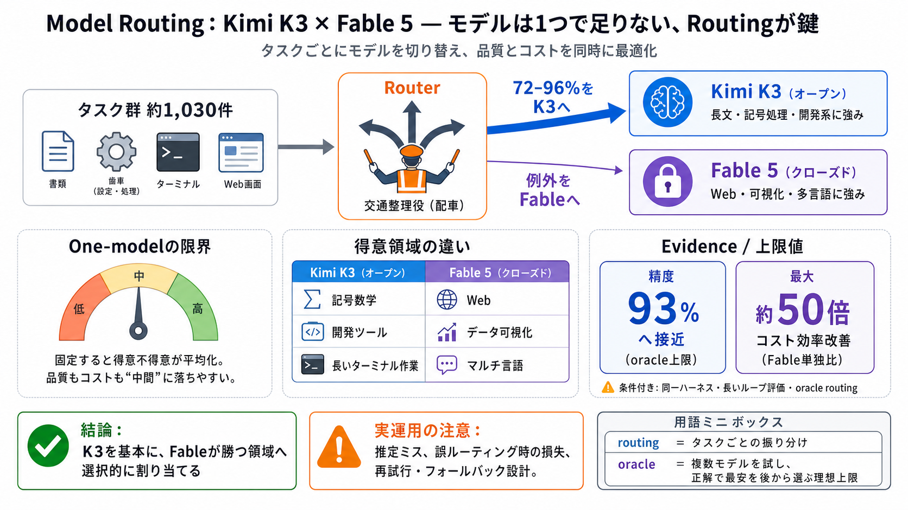

Claude Fable 5 vs Kimi K3
## Data Science in Your Pocket. # Kimi K3 vs Claude Fable 5. ## Claude Fable 5 vs Kimi K3. This is the comparison the be…

モデルは1つで足りない
Kimi K3（オープン）とFable 5（クローズド）を“用途ごとに切り替える”と、品質とコストを同時に最適化できる——という主張を、タスク選別の比較データで示す。
平均は“中間”になる
1モデルに固定すると、カテゴリ別の得意不得意が平均化され、品質もコストも“中間”に落ちやすい。だから「どちらか一方」ではなく「適材適所」が必要になる。
最安の正解を選ぶ
oracle routing（オラクル・ルーティング）は、各タスクを複数モデルで試し「正解で最安の方」を事後的に選ぶ理想の上限測定。実運用ルータは推定で選ぶため、この上限には届かない可能性がある。
ルータの仕事は“配車”
ルータはタスクごとにモデルを切り替える（ルーティング）。oracleの例ではK3へ大半を割り当てつつ、例外にFableを使う設計が前提になる。
比較の土台
同一ハーネスでK3とFable 5に約1,030件のエージェント的タスクを通し、さらにoracle routingで上限比較した。ここで評価は“短答”ではなく長期的な実行（複数ターン）を含む。
93%へ接近
ルーティングがうまくいけば、全体精度は93%精度に近づくとされる（oracleの上限寄り）。重要なのは「どの条件下での精度か」を理解することだ。
最大50倍の効率
Fable単独と比べ、ルーティングにより最大約50倍コスト効率が改善したとされる。価格差だけでなく、実行回数（トークン・ターン）の増え方がモデルで変わる点が理由になる。
同点に見えて別物
全体平均では近い精度でも、カテゴリ別では差が出る。K3は記号数学や開発ツール寄り、FableはWebやデータ可視化寄りで、専門性の分布が異なる。
“長い実行”で差が出る
シェル操作を含む複数ターンの作業で、K3がFableで解けなかったタスク群を解いている例がある。単なる短答ベンチでは見えにくい「エージェントの連続推論・実行の頑健性」が関係する可能性が示唆される。
oracle→実運用は差が出る
oracleは理想条件だが、実運用のルータでは推定ミス、失敗時損失、データ不足による過学習、モデル劣化（時間経過で挙動変化）などの追加論点がある。提示データだけでは回復戦略まで判断できない。
結論：混ぜて運用する
主張の実装指針は「K3を基本にしつつ、Fableが勝つ領域へ選択的に割り当てる」。そうすれば品質は両者以上へ、コストはコスト最適側に近づく可能性がある。
読み替えの要点
93%精度・最大50倍コスト差は、約1,030件・同一ハーネス・oracle routing前提など、条件付きの主張として読むのが安全。実運用ではルータの推定誤りと失敗時設計が結果を左右する。
## Data Science in Your Pocket. # Kimi K3 vs Claude Fable 5. ## Claude Fable 5 vs Kimi K3. This is the comparison the be…
# China’s Kimi K3 comes close to Fable benchmarks at one-third the token price. They have launched a new AI model that c…
Kimi K3 is ~1/3 the price of Fable 5 and beating it on some benchmarks. pricing: kimi k3 — $3 / $15 gpt-5.6 sol — $5 / $…
Kimi K3: An Open Source #1 — Coding Tests vs Fable 5, Opus 4.8 & GPT-5.6 Sol Alejandro AO 78700 subscribers 50 likes 794…
Its intelligence is comparable to Opus 4.8 and GPT-5.5 but remains behind Fable 5 and GPT-5.6 Sol. Moonshot AI has expre…